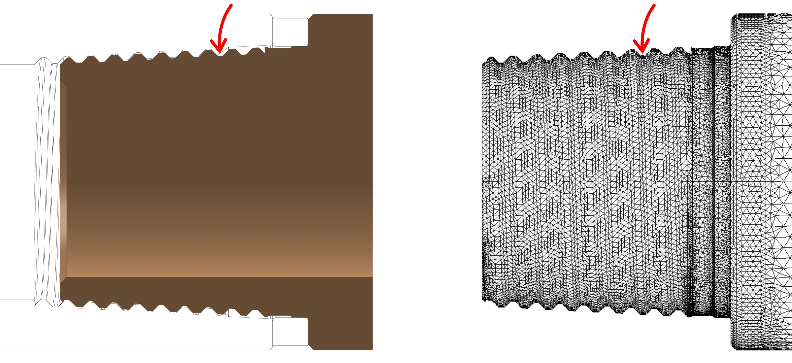
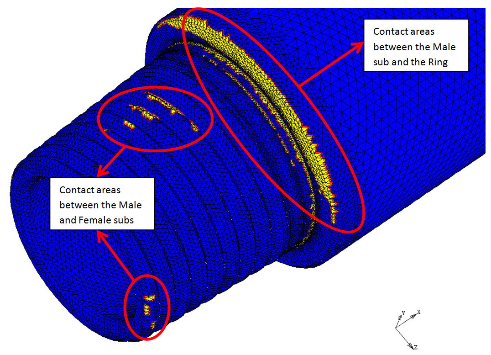
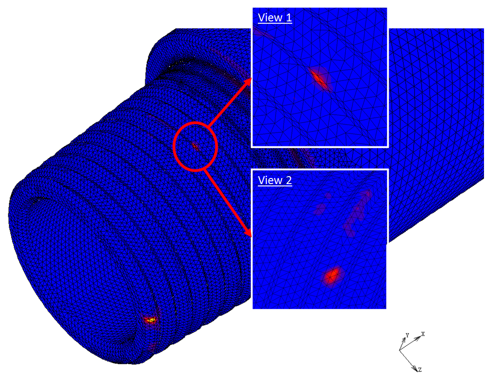

Truong Tho Nguyen >> Projects with Industry
 Project: Finite element analysis of a (drilling) sub gap in contact and under bending condition.
Project: Finite element analysis of a (drilling) sub gap in contact and under bending condition.
Date: October 2011
Partner: Pete Leaney, National Oilwell Varco Downhole (Eurasia) Ltd.
Description of problem:
When drilling deep into ground, the male sub is observed broken at slope angle of 0.46 degree, which is much smaller than the design angle. The partner therefore wants to know whether the cause of this problem is from the design or not. The loading types that the ceramic ring bears during the process is also of interest. To observe the whole process starting after the makeup of the subs, a numerical analysis of the phenomenon is required. Technical drawings of the sub gap and material properties are provided by the partner.
Solution:
Results from the numerical analysis show that due to high stress concentration at one tooth of the male sub next to its shoulder, the male sub is easy to be broken apart even at small slope angle. The main reason is believed coming from the thread design which might be improved by cutting a stress relief groove around the region to spread the stress out.
Figures:
 Three-dimensional model of the sub gap in contact (green: female sub, blue: ceramic ring, orange: male sub) and a cut-out showing contact area.
Three-dimensional model of the sub gap in contact (green: female sub, blue: ceramic ring, orange: male sub) and a cut-out showing contact area.
Orthogonal view of a part of the male sub (left) and its meshing (right).
The red arrows indicate the position of highest bending stress concentration (according to results from FE analysis and from reality).
Contact status (yellow colour) map of the Male sub with the Female sub and Ceramic ring.
Stress map of the Male sub with locations of high stress concentrations where possible failures can occur.
Last updated: 02/05/2012